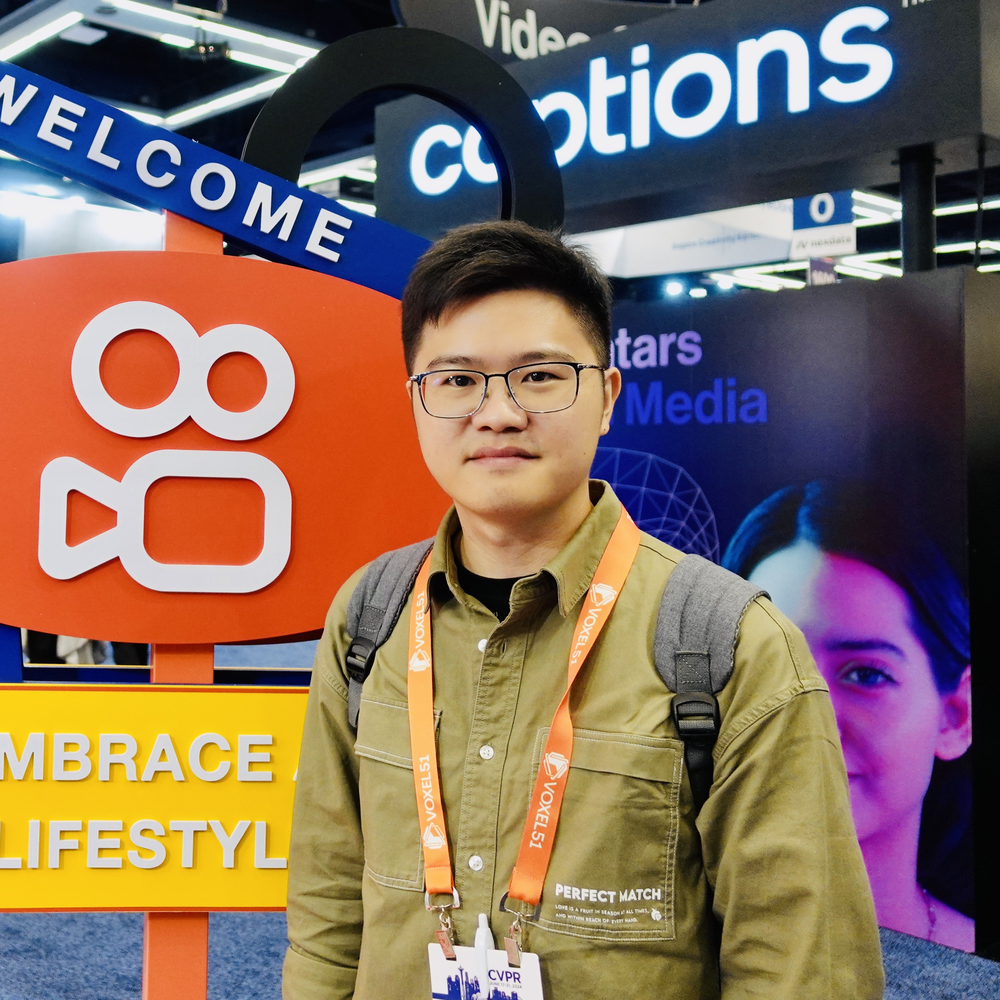
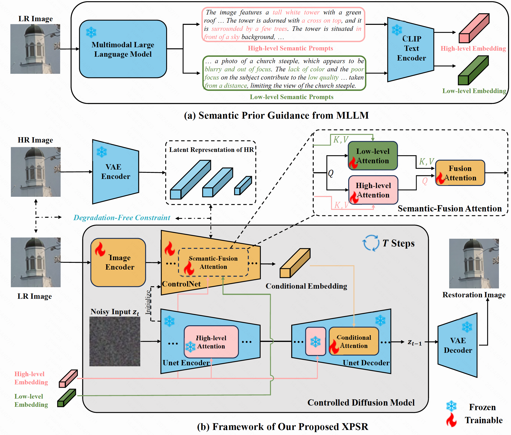
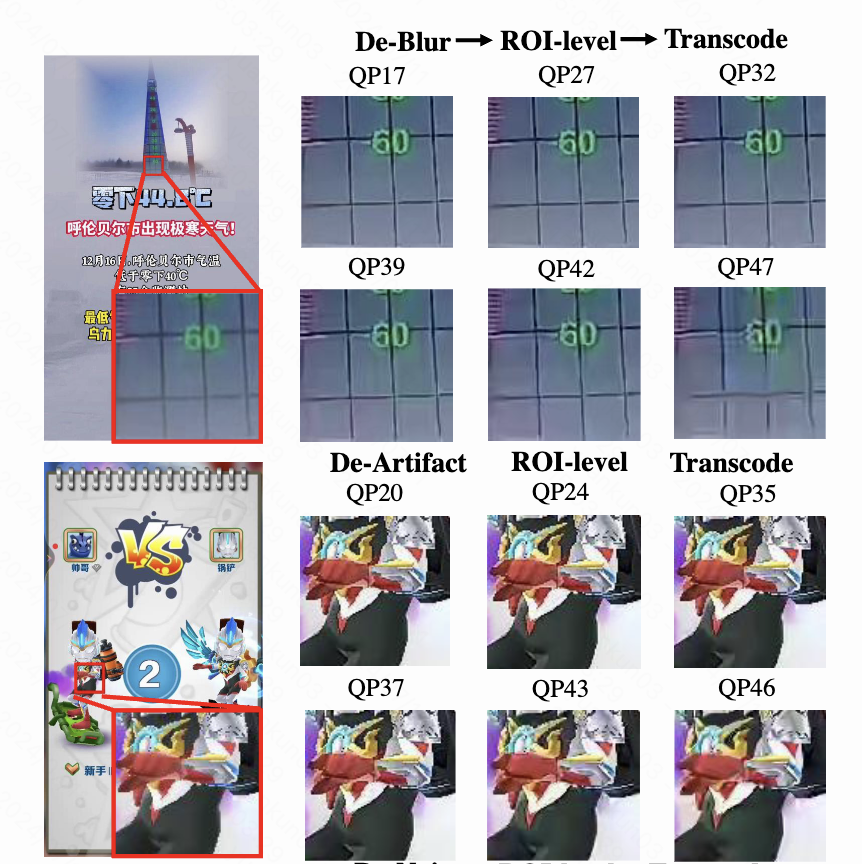
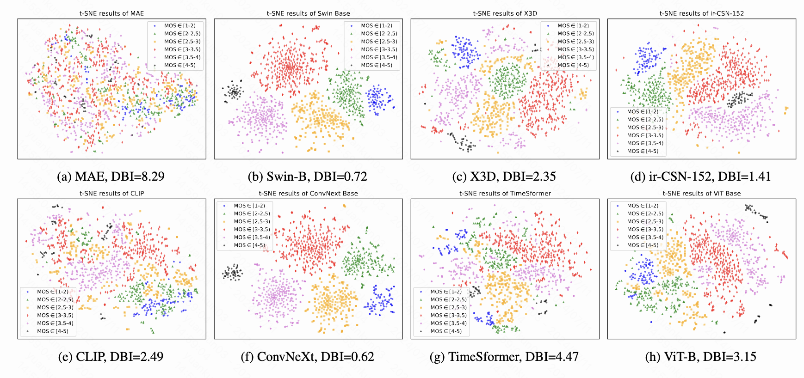
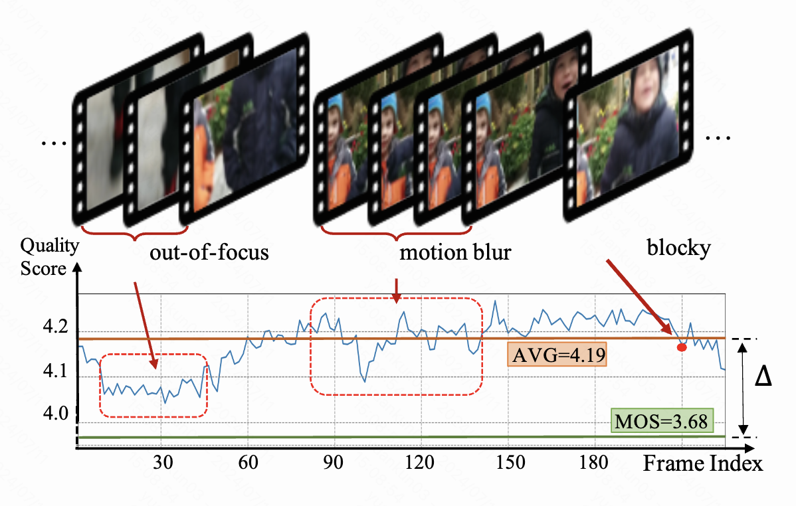
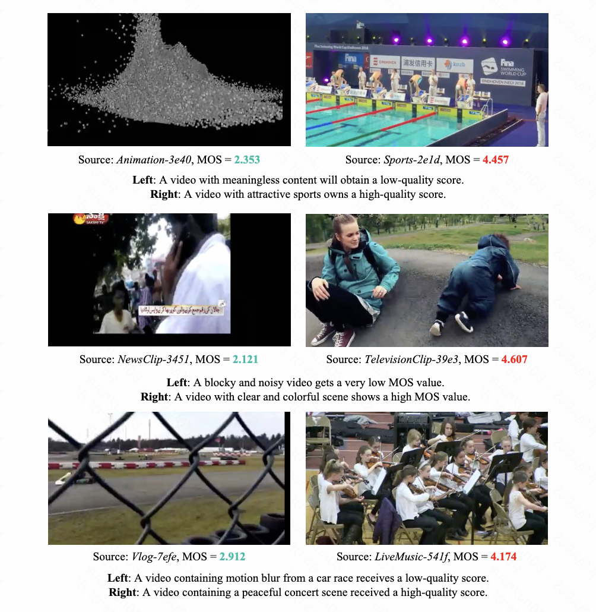
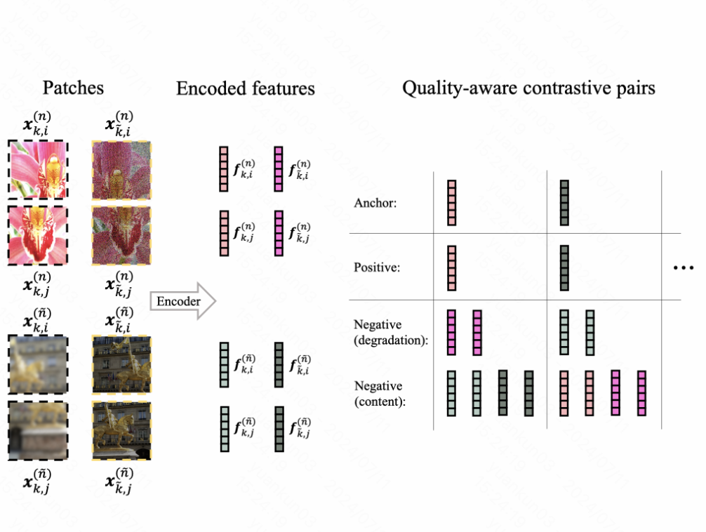

|
Kun Yuan (袁坤)
R&D Engineer in Artificial Intelligence and Computer Vision
Video Technology Group, Kuaishou Technology
Research Interests: Visual Content Generation, Video Quality Assessment, Video Enhancement and Restoration, AI Infrastructure
Email: yuankunbupt dot gmail dot com
[Google Scholar]
|

|
Short Bio
I am currently a senior Research & Development Engineer at Kuaishou Technology since 2021.
Formerly I worked in SenseTime Research in 2018 as a Computer Vision and Machine Learning Researcher.
Formerly I was with the National Laboratory of Pattern Recognition (NLPR), Institute of Automation, Chinese Academy of Science since 2015.
My research interests are in visual content generation, video quality assessment, video enhancement and restoration, neural architecture design and AI infrastructure.
News
-
[2024-07] One paper accepted by ECCV 2024.
-
[2024-03] Two paper accepted by CVPR 2024.
-
[2023-10] Two paper accepted by ACM MM 2023.
-
[2023-03] One paper accepted by CVPR 2023.
-
[2022-03] One paper accepted by CVPR 2022.
-
[2021-02] One paper accepted by ICLR 2021.
-
[2021-02] Two paper accepted by ICCV 2021.
-
[2020-08] One paper accepted by ECCV 2020.
-
[2018-07] One paper accepted by IJCAI 2018.
Publications
(* denotes equal contribution, # denotes corresponding author)
2024

XPSR: Cross-modal Priors for Diffusion-based Image Super-Resolution
Yunpeng Qu*,
Kun Yuan*, Kai Zhao, Qizhi Xie, Jinhua Hao, Ming Sun, Chao Zhou
European Conference on Computer Vision (ECCV), 2024.
[
Paper][
Project Page]

KVQ: Kwai Video Quality Assessment for Short-form Videos
Yiting Lu*, Xin Li*, Yajing Pei*,
Kun Yuan#, Qizhi Xie, Yunpeng Qu, Ming Sun, Chao Zhou, Zhibo Chen#
IEEE/CVF Conference on Computer Vision and Pattern Recognition (CVPR), 2024.
[
Paper]
[
Supp]
[
Project Page]

PTM-VQA: Efficient Video Quality Assessment Leveraging Diverse PreTrained Models from the Wild
Kun Yuan*, Hongbo Liu*, Mading Li*, Muyi Sun, Ming Sun, Jiachao Gong, Jinhua Hao, Chao Zhou, Yansong Tang
IEEE/CVF Conference on Computer Vision and Pattern Recognition (CVPR), 2024.
[
Paper]
2023

Capturing Co-existing Distortions in User-Generated Content for No-reference Video Quality Assessment
Kun Yuan*, Zishang Kong*, Chuanchuan Zheng, Ming Sun, Xing Wen
ACM International Conference on Multimedia (ACM MM), 2023.
[
Paper]

Ada-DQA: Adaptive Diverse Quality-aware Feature Acquisition for Video Quality Assessment
Hongbo Liu*, Mingda Wu*,
Kun Yuan*, Ming Sun, Yansong Tang, Chuanchuan Zheng, Xing Wen, Xiu Li
ACM International Conference on Multimedia (ACM MM), 2023.
[
Paper]

Quality-aware Pre-trained Models for Blind Image Quality Assessment
Kai Zhao*,
Kun Yuan*, Ming Sun, Mading Li, Xing Wen
IEEE/CVF Conference on Computer Vision and Pattern Recognition (CVPR), 2023.
[
Paper]